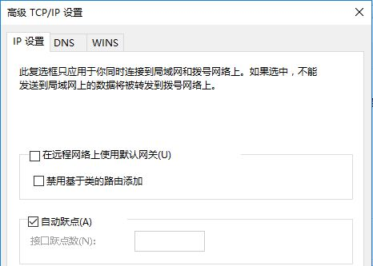

VPN连接后无法访问互联网的解决办法
当安装了VPN网络连接后，成功登录进单位内网的服务器后，要是我们发现此时不能正常访问Internet网络时， 其中可能的原因是: VPN服务器为该客户端系统自动分配了新的默认网关地址; 为了不让Windows 系统优先使用VPN服务器的默认路由，我们可以按照如下操作修改客户端系统的上网参数， 取消选中VPN服务器的默认网关地址 ,而只保留原先的默认网关地址。具体步骤:
- 在网络连接中：右键 VPN网络连接 图标，从弹出的快捷菜单中执行“属性”命令。
- 该属性窗口中点选 网络 选项卡，弹出网络选项设置页面，选中其中的"Internet协议4(TCP/IPv4)" 选项选中，之后单击对应选项下方的“属性”按钮，进入TCP/IP协议的属性界面;
- 点击 高级 后，出现如下画面，将其中的单选框勾选掉。 